Big Data¶
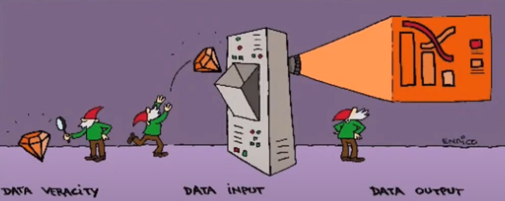
Sabias que ...
"Cada dos días creamos tanta información como la que se creó desde el amanecer de la civilización hasta 2003" Erick Schimidt- CEO Google
Introducción¶
El gran volumen de datos que ha comenzado a generarse en la última década debido a la capacidad de almacenamiento y procesamiento surgida por nuevas tecnologías.
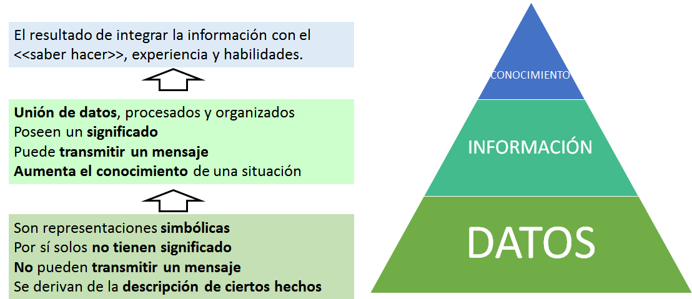
La información referente a una empresa, se genera dentro y fuera de ella. El control de la información generada y la naturaleza de la misma ha dejado de ser centralizada en la empresa. Capturar, procesar, entender y actuar en consecuencia, permite a las empresas comprender rápidamente el entorno en que se mueven en la área de las redes sociales y tener una ventaja competitiva respecto a sus rivales.
Big data describe un conjunto de datos o combinación de los mismos que por su naturaleza, excede la capacidad de procesamiento y almacenamiento de los sistemas y bases de datos convencionales.
Las 5 Vs¶
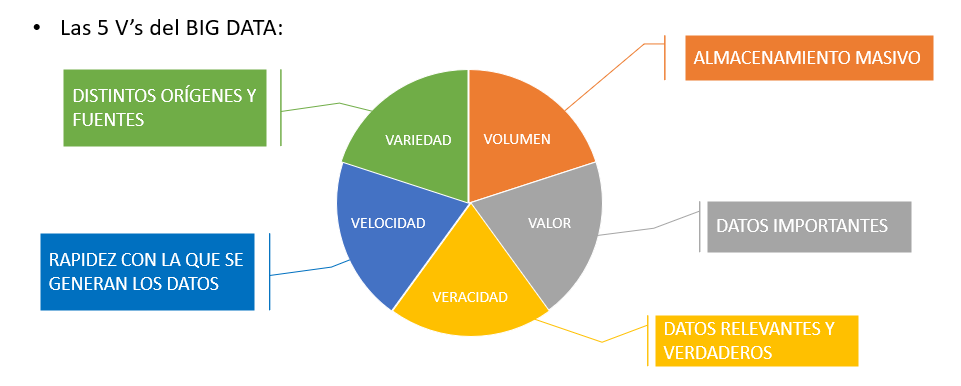
Ejercicio_1
Busca información sobre más Vs en el mundo del Big Data.
Significado de Big Data¶
- Referencia a un conjunto masivo de datos.
- Referencia a técnicas y herramientas informáticas para el almacenamiento de una gran cantidad de datos.
- Referencia a técnicas y herramientas informáticas para procesar el flujo de datos y aplicar transformaciones.
- Referencia a algoritmos de IA y herramientas informáticas.
Almacenamiento¶
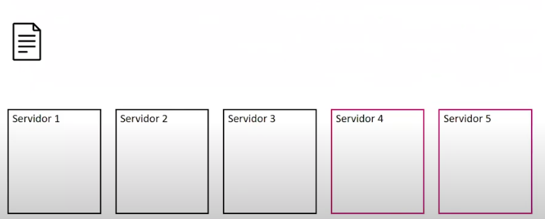
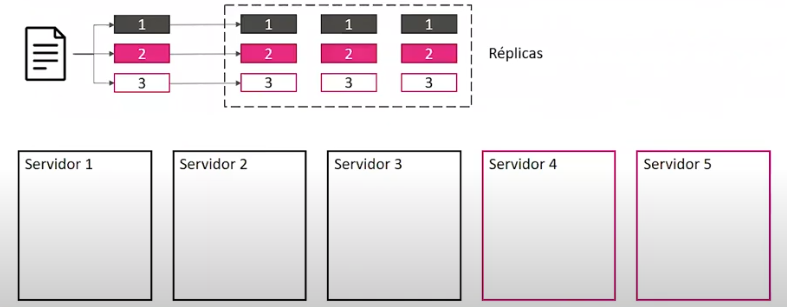
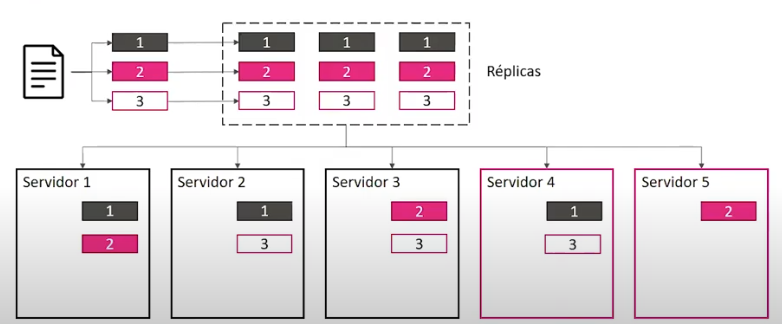
Procesamiento¶
MAPREDUCE
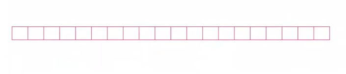 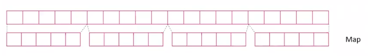 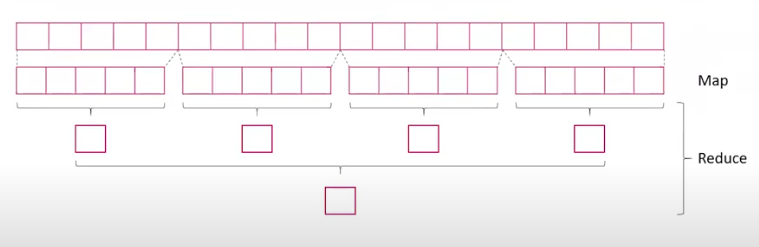
Fases de los proyectos Big Data¶
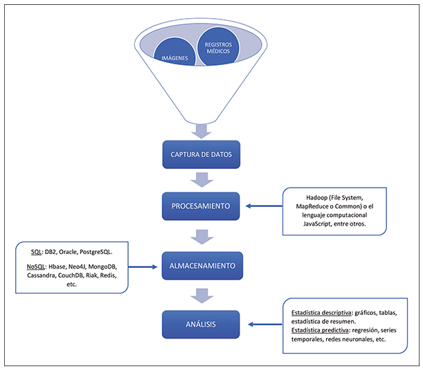
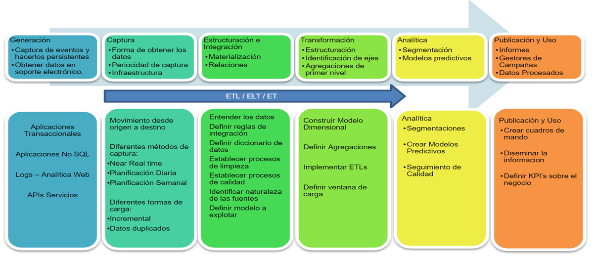
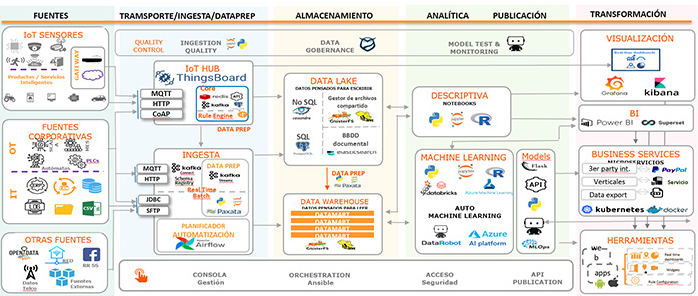
1. Establecer el objetivo de la investigación
Cuando se realiza un proyecto de ciencia de datos, tenemos que tener claro el objetivo y características como qué se va a investigar, cómo se beneficia la empresa, qué datos y recursos necesita, qué calendario de entrega tiene, etc.
- Definir el objetivo de la investigación.
- Crear el estatuto del proyecto.
En el estatuto del proyecto tiene que contener lo siguiente:
a. Un objetivo de investigación claro.
b. La misión y el contexto del proyecto.
c. Cómo se va a realizar el análisis.
d. Qué recursos se van a utilizar.
e. Prueba de que es un proyecto alcanzable.
f. Una medida de éxito.
g. Una línea de tiempo.
2. Recopilar datos
Recolección de datos tanto de la empresa como de terceros verificando la existencia, la calidad y el acceso a los datos. El objetivo es adquirir todos los datos que se necesitan. Esto puede ser difícil. Los datos suelen ser como un diamante en bruto que es necesario pulir para que sirva de algo.
- Datos internos
- Datos externos
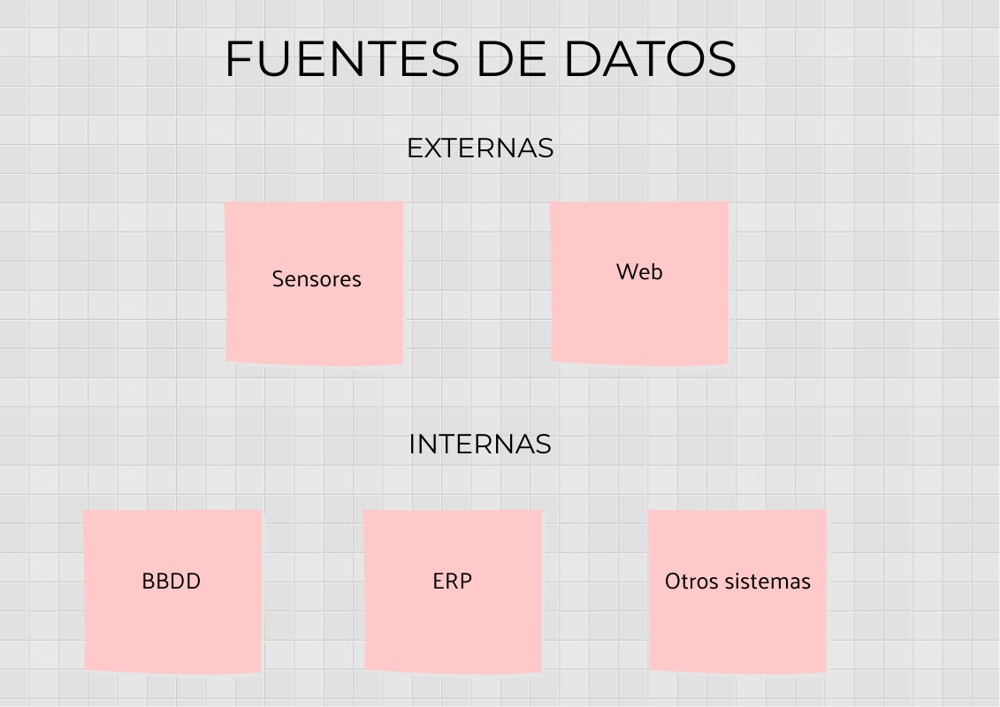
3. Preparación de datos
La recopilación de datos, puede llevar a datos erróneos, por lo tanto, en esta fase se mejora la calidad de los datos y se preparan para su uso en las siguientes fases. Se realiza una limpieza de datos para asegurar que los datos estén en un formato adecuado para utilizar en sus modelos.
Esta fase tiene 3 etapas:
- Limpieza de datos: eliminar errores en sus datos para que sus datos se conviertan en una representación verdadera y consistente de los procesos de los que se originan.
Ejemplo:
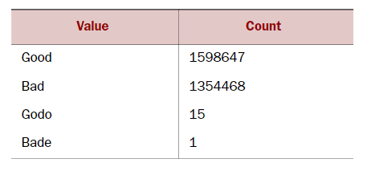
Solución:
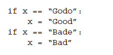
- Combinación de datos diferentes: Los datos provienen de varios lugares diferentes y por lo tanto tenemos que realizar diferentes operaciones (unir, agregar o apilar, ...) para crear o bien otra tabla o bien una vista que no consume espacio en disco.
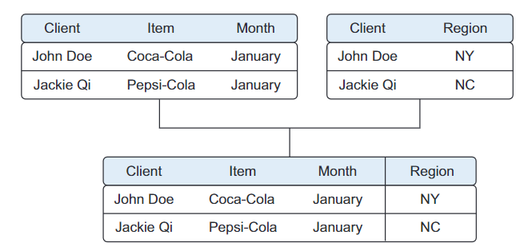
- Transformación de datos:
Algunos modelos requieren que sus datos tengan una forma determinada. Una vez que los datos se han limpiado y se han integrado, la siguiente tarea será transformar sus datos para que adopten una forma adecuada para el modelo de datos.
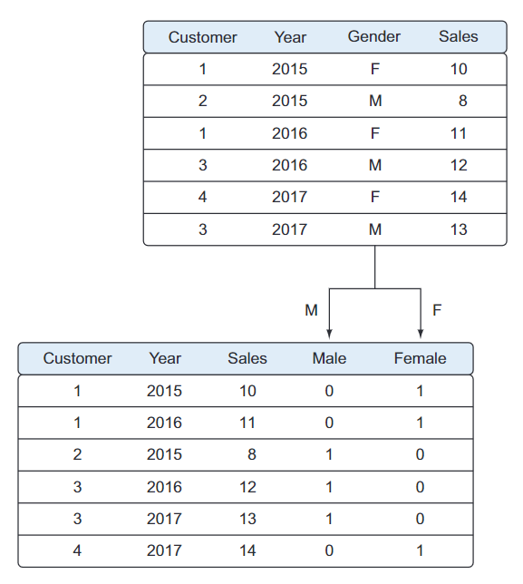
4. Exploración de datos
Para la comprensión más profunda de los datos. Se intenta comprender cómo las variables interactúan entre sí, la distribución de los datos y si existen valores atípicos. Para lograr esto, se utilizan principalmente estadísticas descriptivas, técnicas visuales y modelado simple. La información es más fácil de captar cuando se muestra en una imagen, por lo tanto, se utilizan principalmente técnicas gráficas para comprender los datos y las interacciones entre variables. Aunque el objetivo no es limpiar datos, en esta fase se pueden descubrir anomalías que se nos hayan escapado antes, lo que obligará a dar un paso atrás y corregirlas. Las técnicas de visualización que se utilizan en esta fase van desde simples gráficos lineales, hasta complejos gráficos de red.
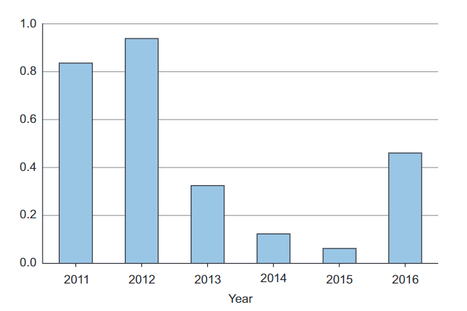
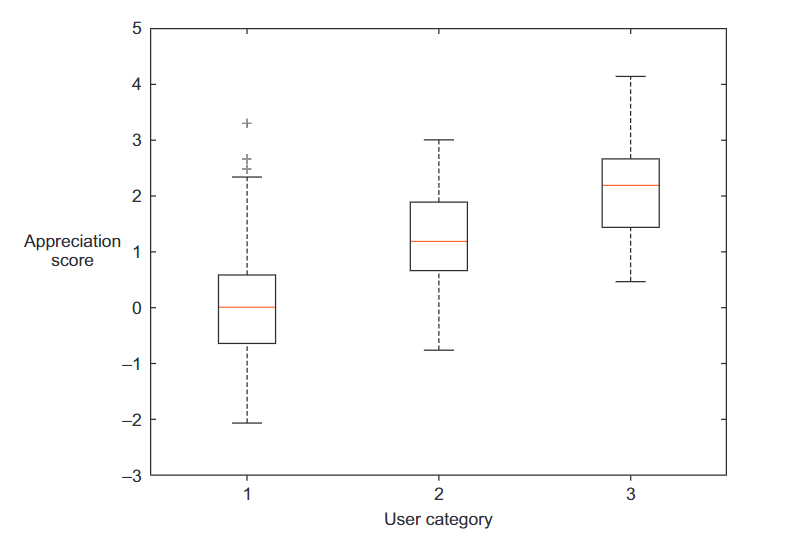
5. Modelado de datos o construcción de modelos
Una vez que tengo los datos limpios en su lugar y una buena comprensión del contenido, ya estamos en disposición de construir modelos con el objetivo de hacer mejores predicciones, clasificar objetos o comprender el sistema que está modelando. En esta fase se utilizan modelos de conocimientos sobre los datos que se encontraron en la fase anterior para poder responder a la fase de investigación. Se seleccionan técnicas de los campos de la estadística, aprendizaje automático, investigación de operaciones, etc. La construcción de un modelo es un proceso iterativo que implica la selección de las variables para el modelo, la ejecución y los diagnósticos del modelo. Las técnicas que se usan provienen de:
-
Machine Learning (Aprendizaje automático)
-
Minería de datos
-
La estadística
Ejemplo
Caso de estudio: ¿Qué productos se compran usualmente juntos?.
-
El conjunto de datos contiene, por cada compra de un cliente, qué productos adquirió y cuál fue el precio final de la compra.
-
Aplicando minería de datos y en concreto técnicas de Reglas de Asociación se obtienen los siguientes resultados:
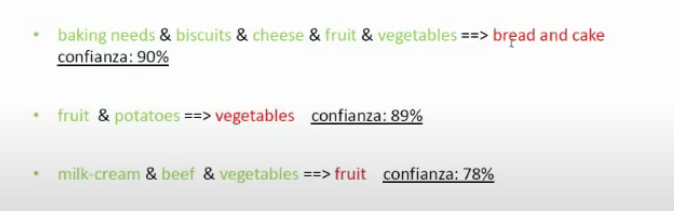
6. Presentación y automatización
Después de haber analizado con éxito los datos y construido un modelo de buen rendimiento, se presentan los resultados de diferentes formas, desde presentaciones hasta informes de investigación.
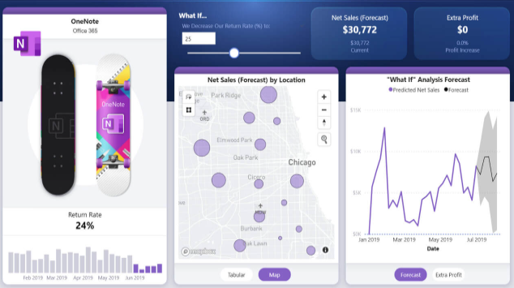
Ejercicio_2
Una vez vistas las fases del proceso de ciencia de datos. Busca o inventa un proyecto que una empresa podría pedirnos y analiza cada una de las fases que tendría que tener el proyecto.
Tipos de almacenamientos¶
ON-PREMISE- Cuando la información se almacena en servidores, racks locales, instalados en la propia organización.CLOUD - NUBE- Cuando se utiliza las infraestructuras de terceros (AWS, Google, ...). Tiene las siguientes características:a. Capacidad de abstracción de los recursos. b. Escalabilidad. c. Modelo de servicio pago por uso. d. Acceso ubicuo.
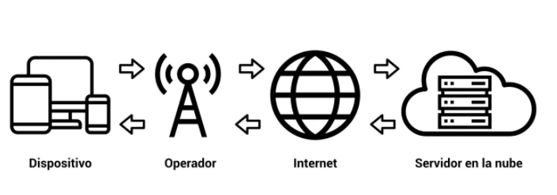
NUBE PÚBLICA- Los datos se guardan en una nube que está abierta al uso de todas las personas que lo deseen.NUBE PRIVADA- Los datos se guardan en una nube, pero dentro de un entorno local de difícil acceso a todos aquellos que no sean de la empresa.-
HYBRID CLOUD- Cuando se produce una combinación entre la nube pública y la nube privada. -
EDGE- El almacenamiento y procesamiento de la información se produce cerca del punto de recolección. Se ubican unas zonas intermedias que nos permiten procesar y almacenar datos mucho más cerca de los dispositivos por lo que la velocidad se dispara y la latencia se reduce.
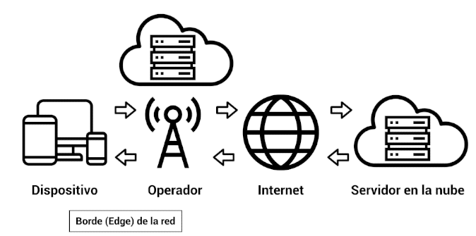
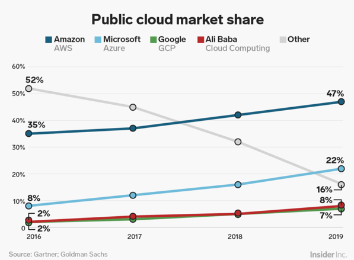
Modelo Cloud Federadas
Son proveedores más pequeños que se agrupan para ofrecer al cliente diferentes servicios. Se federan para optimizar los recursos. Un cliente lanza una petición a la nube y le llega a un broker que será quien decida a que proveedor se lo envía. Si un proveedor está saturado, no se le envían peticiones e irían a otro proveedor. Para el cliente, ésto es transparente. Los grandes proveedores no entran en esto (porque no lo necesitan). La unión europea ha iniciado un proyecto llamado proyecto Gaia-X.
Ejercicio_ampliación
Investiga sobre el proyecto Gaia-X